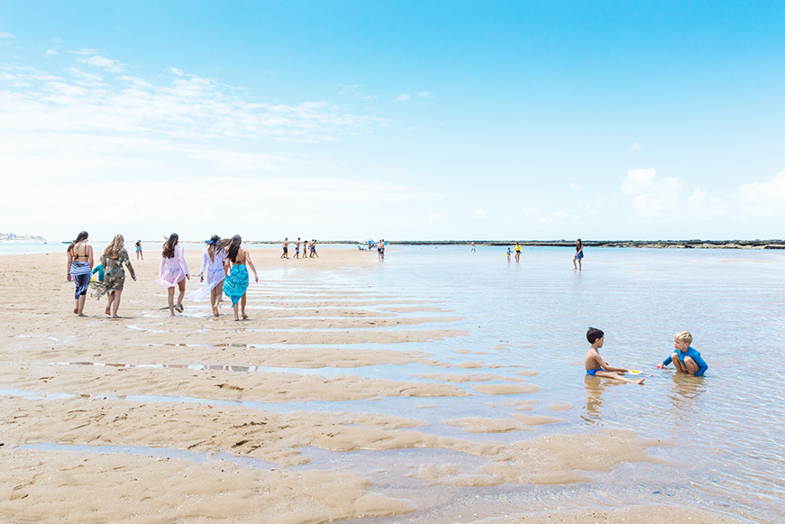
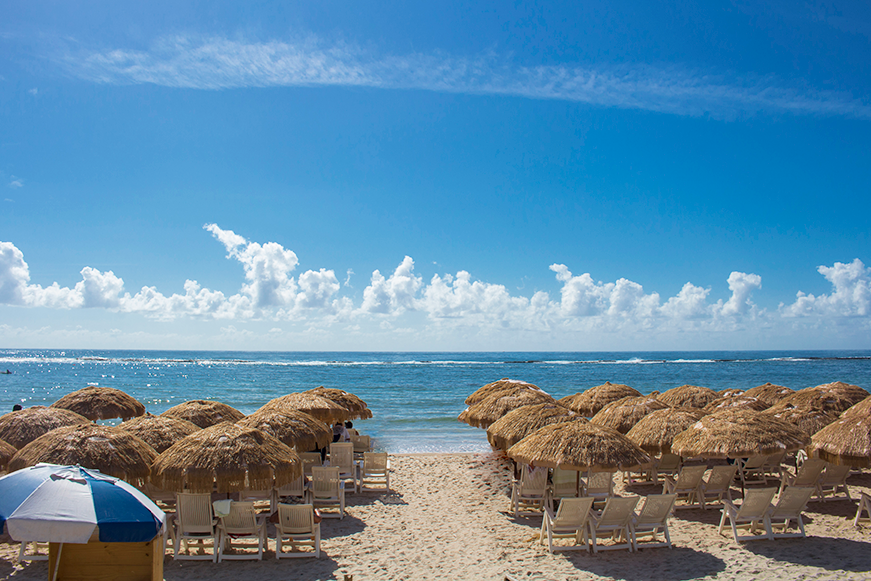
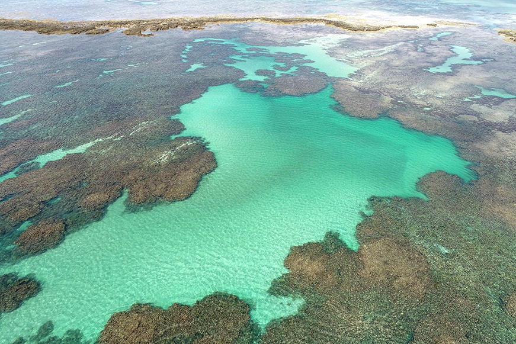

UM POUCO SOBRE O ESTADO DE ALAGOAS
Alagoas é um estado brasileiro que compõe a região Nordeste, com capital no município de Maceió. Seu relevo é formado por depressões e por planaltos, e os climas encontrados no estado são o semiárido e o tropical. A atual população alagoana é de pouco mais de 3,1 milhões de habitantes, vivendo a maioria nas cidades. Atualmente,a economia alagoana se destaca pela produção de cana-de-açúcar e pela indústria ligada a esse cultivo.
PRAIAS FAMOSAS
Tabela com imagens das praias e suas respectivas descrições
| Nome da Praia | Informações | Imagem |
|---|---|---|
| Praia do Gunga | A Praia do Gunga é tida por muitos como a praia mais paradisíaca em Alagoas e uma das mais belas do mundo. Ela pertence ao pequeno município de Roteiro,bem próximo à Barra de São Miguel – a 31 quilômetros de Maceió. Cercada por um gigante coqueiral, o mar tem águas calmas e azuis. O Gunga é localizado em uma península, o que torna o local ainda mais belo e paradisíaco. Dois bicos de areia dão a impressão de formar pequenas e aconchegantes praias. Do lado esquerdo, é possível avistar a Barra de São Miguel e o encontro da lagoa de Roteiro com o mar. Já na outra ponta, podemos ver justamente as gigantescas falésias, esculpidas em rochas íngremes e com areias de várias cores. A melhor definição é: fascinante! |  |
| Praia do Francês | Ainda conhecendo as belezas do litoral sul, chegamos até a Praia do Francês, na histórica cidade de Marechal Deodoro – a primeira capital de Alagoas. É impossível vir por aqui e não se apaixonar pelo Francês e seus atrativos. Uma imensa barreira corta o mar de uma ponta à outra, transformando parte da praia no local ideal para famílias e crianças. De água azul cristalina e vasto coqueiral, o ambiente é perfeito para as férias e finais de semana, portanto. Se você curte turismo de aventura, certamente a Praia do Francês é feita para você. A região é propícia para a prática de stand up paddle, mergulho e outras atividades. Na região de mar aberto, os surfistas se divertem com as ondas. Uma soma de opções para te deixar simplesmente encantado, certamente! |  |
| Praia São Miguel dos Milagres | Continuando a nossa viagem pelo litoral de Alagoas, vamos para a Praia de São Miguel dos Milagres, que ganhou bastante notoriedade pelo seu Réveillon, um dos mais badalados do país. Mas não ache que Milagres é famosa apenas por suas festas, pois a região possui um dos litorais mais encantadores do Nordeste, com águas calmas, perfeitas para relaxar, curtir a paisagem e se sentir no paraíso. Outro diferencial são as charmosas pousadas e os sofisticados restaurantes, que dão um toque rústico e romântico sem igual, fazendo você se sentir em outra realidade. Portanto, não deixe de passear de jangada até as piscinas naturais. Lá, mergulhe ao lado de peixinhos coloridos e tenha, inegavelmente, uma das melhores experiências da sua vida! |  |